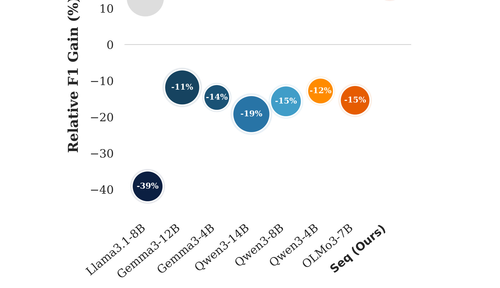
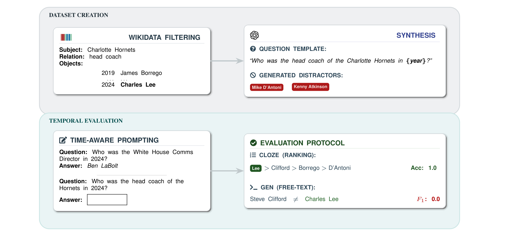
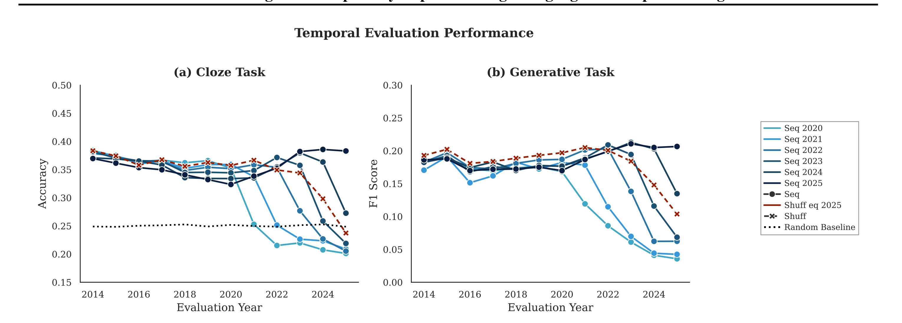

论文入口：arXiv:2605.22769。作者与机构：Kyutai 研究团队。主类别：LLM；次级标签：预训练、评测、数据时间性。 这篇笔记聚焦《Understanding Data Temporality Impact on Large Language Models Pre-training》。一句话结论：用 KairosQA 和 6B 预训练对照实验量化 Common Crawl 时间顺序、知识新鲜度与模型能力之间的关系。 它把“预训练语料是否要按时间组织”从经验判断推进到可测量问题：同样是网页数据，时间顺序、混洗和知识时间点会改变模型在时序事实、旧知识保持和新知识吸收上的表现。
1. 背景和问题
大模型训练通常把网页语料视为静态样本池，但真实互联网文本有明确时间轴。新闻、软件版本、产品信息和世界事实都会变化，若训练打乱时间，模型可能在早期就看到未来信息，也可能把旧事实和新事实混在一起，导致评估时难以区分记忆、泛化与泄漏。 这类问题在 2026 年的推荐系统和大模型工程中都很典型：模型能力不再只由主干网络决定，而越来越受数据组织、反馈闭环、系统状态和部署约束影响。 它把“预训练语料是否要按时间组织”从经验判断推进到可测量问题：同样是网页数据，时间顺序、混洗和知识时间点会改变模型在时序事实、旧知识保持和新知识吸收上的表现。 我把它纳入今日报告，是因为它不仅提出一个局部技巧，也暴露了当前系统设计中的一个长期变量。若这个变量被忽略，后续再强的模型或更大的训练预算也可能只是把偏差放大。 补充背景：Kairos 之所以值得单独成篇，是因为它把一个很容易被自动化流水线忽略的变量放回主问题中。阅读时我会追问：这个变量是否能从日志或数据表中稳定取得，是否会被训练管道清洗掉，是否会在评估时造成未来信息、选择偏差或状态污染。如果答案是肯定的，那么只比较最终指标是不够的，还要把样本生成、模型版本、服务状态和回滚策略写入实验记录。这样做能避免把一次离线提升误判成可上线能力，也能让后续复现知道差异来自论文机制还是来自数据口径。
再往深一层看，Kairos 的背景部分还需要和历史报告去重后的空白相连。最近几天已经记录过多篇后训练、生成式推荐和 agent 系统论文，因此今天选择它不是因为标题新，而是因为它补上了另一个维度。这个维度会影响样本如何被收集、模型如何被评估、服务如何在异常时恢复，也会影响论文指标是否能迁移到本地系统。换句话说，背景问题不是抽象研究兴趣，而是后续能否建立可靠自动化流水线的前置条件。

Figure 1 用来定位《Kairos》的真实问题背景：大模型训练通常把网页语料视为静态样本池，但真实互联网文本有明确时间轴。新闻、软件版本、产品信息和世界事实都会变化，若训练打乱时间，模型可能在早期就看到未来信息，也可能把旧事实和新事实混在一起，导致评估时难以区分记忆、泛化与泄漏。 这张图放在背景部分，是因为它先说明为什么现有做法不够，而不是急着给出模型结构。读它时要看三层信息：第一，论文认为当前系统中哪一个隐含假设已经失效；第二，这个假设失效后会造成怎样的工程风险；第三，后文方法需要补上的约束是什么。对本次调研而言，它的价值是把论文从普通增量工作中区分出来，让后面的公式、模块和实验都能回到同一个问题上。
从研究脉络看，《Kairos》和最近几天的多篇论文有共同趋势：把过去被当作外围工程的东西纳入建模对象。对 LLM 来说，这可能是语料时间、KV 状态、沙箱状态或安全通道；对推荐来说，这可能是 bandit feedback、图文可靠性或长期兴趣。 它要回答的不是“能不能再涨一点指标”，而是“现有系统把什么重要信息错误压缩掉了”。这也是我阅读本文时最关注的地方：论文是否真的恢复了被压缩的信息，还是只是换了一个更复杂的模块名称。
2. 方法
2.1 问题形式化和核心变量
论文首先把目标对象从模糊经验转成可操作变量。论文构造 KairosQA，收集 7000 多个带时间锚点的问题，并在 6B 规模预训练中比较按时间排序与混洗 Common Crawl 的影响。核心不是提出新架构，而是把数据时间戳纳入训练和评估协议，使模型能力变化能和语料时间线对应起来。 在这个定义下，方法的关键不是增加一个黑盒模块，而是明确哪些输入应被保留、哪些噪声应被过滤、哪些约束必须在训练或系统层面显式出现。 方法章需要做公式审计。本文可以用下面的抽象公式表示核心机制：
符号解释：$x_t$ 表示第 $t$ 个训练 token 或文本片段，$\tau_t$ 是对应语料时间戳，$\theta$ 是模型参数。这个公式不是论文的新损失，而是本文可复用的公式化审计：预训练目标应显式记录样本时间，避免把时间信息在数据管道中抹掉。 这个公式用于帮助复现时检查实现是否抓住论文主张。若代码只实现了表面模块，却没有保留这些变量之间的约束关系，实验很可能无法复现论文声称的收益。
2.2 模块流程和训练信号

Figure 2 是理解《Kairos》方法的核心锚点，展示了论文如何把问题转成可执行流程。结合方法公式看，图中的每个模块都对应一个变量、状态或约束，而不是单纯堆叠组件。我会重点检查输入如何进入系统，中间表征在哪里被改写或过滤，以及输出如何服务最终任务。论文构造 KairosQA，收集 7000 多个带时间锚点的问题，并在 6B 规模预训练中比较按时间排序与混洗 Common Crawl 的影响。核心不是提出新架构，而是把数据时间戳纳入训练和评估协议，使模型能力变化能和语料时间线对应起来。 因此这张图适合放在方法章，帮助确认论文贡献是在训练目标、数据组织、系统状态还是多模态融合上。如果后续复现，图里的边界也能直接变成代码目录、数据表字段或服务接口。
从流程上看，《Kairos》的方法可以拆成三步。第一步是定义输入状态，避免把关键上下文过早压缩。第二步是引入可学习或可审计的中间机制，使模型在训练或推理时能区分有用信号和干扰信号。第三步是把中间机制接回最终任务指标，证明它不是孤立的表示学习。 这个拆法对工程落地很重要。若只复制最终模型结构，而没有相同的数据口径、反馈日志、状态隔离或评测协议，收益会变得不可解释。本文方法真正值得借鉴的是变量边界：哪些字段必须进入样本，哪些中间状态可以缓存，哪些反馈不能直接当标签，哪些安全约束必须进入系统。
2.3 与既有路线的差异
与常见基线相比，《Kairos》的差异不在于把模型做大，而在于重新定义优化对象。对工程团队最直接的启发是：数据湖中的 timestamp 不只是 ETL 元数据，它可能影响训练评估。若做持续预训练或周期性增量训练，应该保留数据时间轴，并单独报告未来泄漏、旧知识遗忘和新知识吸收。 这使它更像一条系统论文或训练协议论文，而不是单纯模型论文。 如果把它放到推荐和 LLM 交叉方向，最值得关注的是它能否和现有链路共存。很多论文在离线任务上成立，但上线时会被延迟、缓存、隐私、日志缺失和反事实估计限制。本文的设计至少给出了一个可检查接口：输入是什么、输出是什么、约束在哪里、失败时如何回滚或审计。
2.4 复现要点和失败模式
复现时我会先做小规模闭环，而不是直接追求论文最高指标。第一，固定数据切分和时间窗口，防止评估泄漏。第二，复现核心模块的最小版本，确认公式中的变量可观测。第三，加入强基线和消融，区分论文贡献与额外算力、额外特征或更长训练带来的收益。 主要失败模式包括：论文聚焦 6B 规模和特定时间问答集合，结论不能直接外推到所有模型尺寸、语言和领域。KairosQA 的覆盖也偏事实问答，不等价于完整产品能力。 这些风险不会因为论文指标好看而消失。更稳妥的做法是把本文当成一组可验证假设，先在离线或影子流量里验证变量是否真的改善目标，再考虑接入主链路。
复现 Kairos 时，我会把实现拆成数据层、模型层和系统层三张检查表。数据层确认字段是否完整、时间和来源是否可追溯；模型层确认公式中的变量是否真实进入损失或推理路径；系统层确认缓存、权限、延迟和失败恢复是否与论文假设一致。这个拆分能防止一个常见误区：看到论文有新模块就直接照抄模块，却没有复制它依赖的日志条件和评测约束。对推荐系统尤其如此，点击、曝光、图片、文本和长期行为都不是天然干净标签；对 LLM agent 也一样，KV cache、文件状态和沙箱回滚都不是普通张量。因此方法章里我更关注可审计边界，而不是模块名字。只要边界清楚，就可以先做最小实现；如果边界不清楚，模型结构再复杂也很难解释收益。
在工程评审会上，我会要求 Kairos 的复现方案回答五个问题：需要新增哪些离线字段，哪些字段来自不可修改的原始日志，哪些中间状态可以缓存，哪些状态必须按用户或租户隔离，哪些指标用于提前停止实验。如果这些答案写不清，说明方法还停留在论文描述层面。只有当数据契约、模型接口和服务接口都明确时，公式中的变量才会变成可运行系统。此外还要准备反例集：时间错位样本、恶意或隐私敏感样本、噪声多模态样本、曝光概率极低样本、长期兴趣迁移样本等。反例集能帮助判断方法是不是只在平均样本上有效。
方法落地还需要一张更细的变量审计表。对 Kairos 而言，表中至少应包含变量名称、产生环节、更新时间、是否可回放、是否涉及隐私、是否会被采样策略影响、是否能在离线评测和线上日志中同时观察。这张表的作用不是增加文档负担，而是把论文公式和生产数据对齐：如果某个变量只在论文实验中存在，本地没有稳定来源，就只能做研究复现；如果变量在日志中存在但口径会随版本变化，就必须加入版本字段和数据质量告警。对于推荐链路，还要检查曝光概率、候选生成策略和用户分群；对于 LLM agent 链路，还要检查上下文权限、缓存生命周期、沙箱状态和失败回滚。只有这些前置条件成立，Kairos 的方法才有可能从笔记进入实验。
3. 实验结果
3.1 实验覆盖和指标口径
实验重点观察 ordered 与 shuffled 语料在 temporally grounded QA 上的差异，同时检查不同时间段知识的吸收速度。论文还释放代码、checkpoint 和数据，便于后续复核数据时间线对预训练的影响。 我阅读实验时优先看指标和论文主张是否一致。例如系统论文要看延迟、吞吐、恢复成本和失败率；推荐论文要看 AUC、NDCG、Recall、长期指标和反馈偏差；LLM 训练论文要看时间切分、数据泄漏、能力保持和泛化。

Figure 4 提供《Kairos》的证据支撑：实验重点观察 ordered 与 shuffled 语料在 temporally grounded QA 上的差异，同时检查不同时间段知识的吸收速度。论文还释放代码、checkpoint 和数据，便于后续复核数据时间线对预训练的影响。 这张图或表不能只看最高分，还要看对照组、消融项和指标口径是否真正对应论文主张。我在阅读时优先关注三点：收益是否来自核心模块，是否存在只在某个数据集上成立的单点现象，以及指标能否映射到真实推荐或 Agent 系统。若后续要做工程试验，这里的结果应转化为最小复现清单，而不是直接当成线上收益承诺。对 Kairos 来说，还要把失败样本、成本曲线和边界条件一起记录；只有当这些信息与主指标同向时，图表才足以支撑工程决策。还应记录 Kairos 在低频样本、异常样本和成本受限场景下是否保持同样趋势，否则单张图表只能说明论文设置有效，不能说明本地系统也会受益。
3.2 主要结果的解读
本文结果最有价值的地方，是把核心假设和可观测指标连接起来。实验重点观察 ordered 与 shuffled 语料在 temporally grounded QA 上的差异，同时检查不同时间段知识的吸收速度。论文还释放代码、checkpoint 和数据，便于后续复核数据时间线对预训练的影响。 如果只看单个最高分，很容易把论文误读成普通调参；但把实验放回问题定义，就能看到它在验证一个更具体的判断：系统此前丢失或误用了某类信息，而新方法把这类信息重新接入了任务。 对推荐系统读者来说，实验结果还要特别检查数据分布。离线提升不代表线上收益，尤其涉及 bandit feedback、多模态内容、长期兴趣和生成式候选时，日志策略、曝光概率、冷启动比例和用户迁移都会改变结论。对 LLM 系统读者来说，则要检查模型尺寸、上下文长度、并发环境和安全边界是否与生产环境一致。
3.3 消融、鲁棒性和边界
我会把本文的消融看成三个问题。第一，去掉核心变量后是否明显退化；第二，换数据集或换任务后是否仍能保持趋势；第三，成本是否随规模增长而可接受。论文聚焦 6B 规模和特定时间问答集合，结论不能直接外推到所有模型尺寸、语言和领域。KairosQA 的覆盖也偏事实问答，不等价于完整产品能力。 因此本文更适合作为后续实验方向，而不是直接作为产品承诺。 如果后续复现，我建议补充统一日志表：记录样本时间、反馈来源、模型版本、推理成本、失败类别和人工检查结果。这样即使无法完全复现论文数值，也能判断方法是否改善了真正关心的链路瓶颈。
实验补充解读：Kairos 的结果应被看作一组假设检验，而不是单点排行榜。第一，要确认主结果是否和核心机制同向；第二，要看消融是否能排除额外参数、额外数据和训练时长的影响；第三，要把成本指标放到同一张表里。如果论文只报告平均指标，却没有说明失败样本和数据切分，就需要在本地复现时补上错误分类。对线上推荐或 agent 系统，最有价值的不是离线分数本身，而是确认哪类请求、哪类用户、哪类状态或哪类反馈最受益。这个信息决定后续是全量上线、只在特定流量试验，还是只保留为离线分析工具。
补充到实验层面，Kairos 后续最应该增加的是时间外推和压力测试。时间外推用于确认模型没有利用未来信息或短期热点；压力测试用于确认在缓存失效、反馈稀疏、图像噪声、沙箱分支过多或 KV 共享异常时，方法不会把错误扩大。这些测试未必都在原论文中完整覆盖，但它们决定了方法能否从论文笔记进入真实项目。若实验只复现主表数字，而不复现这些边界，结论只能作为研究参考，不能作为上线依据。
4. 总结
我对《Kairos》的判断是：它值得保留进知识库，因为它抓住了一个正在变重要的系统变量。用 KairosQA 和 6B 预训练对照实验量化 Common Crawl 时间顺序、知识新鲜度与模型能力之间的关系。 这类工作短期未必能直接替换现有主链路，但非常适合作为离线实验和架构评审清单。 可行动的后续步骤是：先复核论文代码或数据是否开放；再用自己的日志和评测集构造最小复现；最后只把经过验证的变量接入主模型或服务。对工程团队最直接的启发是：数据湖中的 timestamp 不只是 ETL 元数据，它可能影响训练评估。若做持续预训练或周期性增量训练，应该保留数据时间轴，并单独报告未来泄漏、旧知识遗忘和新知识吸收。 同时要把风险项前置，而不是等指标上涨后再补安全、隐私或反事实校正。 从今日论文组合看，LLM 方向正在把数据时间性、KV 潜状态和 agent 沙箱状态纳入建模；推荐方向正在把反馈偏差、多模态可靠性和长期兴趣纳入建模。它们的共同点是从“更强模型”转向“更清楚的系统状态”。《Kairos》正好提供了其中一个切面，后续应跟踪代码、数据、复现实验和是否有工业部署细节。 最后的落地判断是：Kairos 更适合作为一个可验证组件进入实验队列，而不是直接替代现有链路。下一步应先收集论文代码、数据或附录细节，再用同一批样本跑强基线和核心消融。若最小复现无法证明关键变量有效，就不应继续扩大训练规模；若复现成立，再评估延迟、存储、隐私和维护成本。这个顺序能把论文价值转化成工程证据，也能避免为了追逐新方法而引入不可解释的系统复杂度。 因此我会把 Kairos 放入后续观察池，并给它一个明确的采用门槛：先证明核心变量带来可解释收益，再证明成本和安全边界可控，最后才讨论是否接入主链路。这个门槛同样适用于今天其他论文，能把论文调研从“读到新方法”推进到“知道什么时候该试、什么时候不该试”。
补充观察：Kairos 后续若出现开源代码、复现实验或工业博客，应优先核对本文记录的变量边界是否被保留。如果新材料只给最终指标而不披露数据口径和状态管理细节，就需要继续标注为研究参考，不能直接归入可复用工程方案。